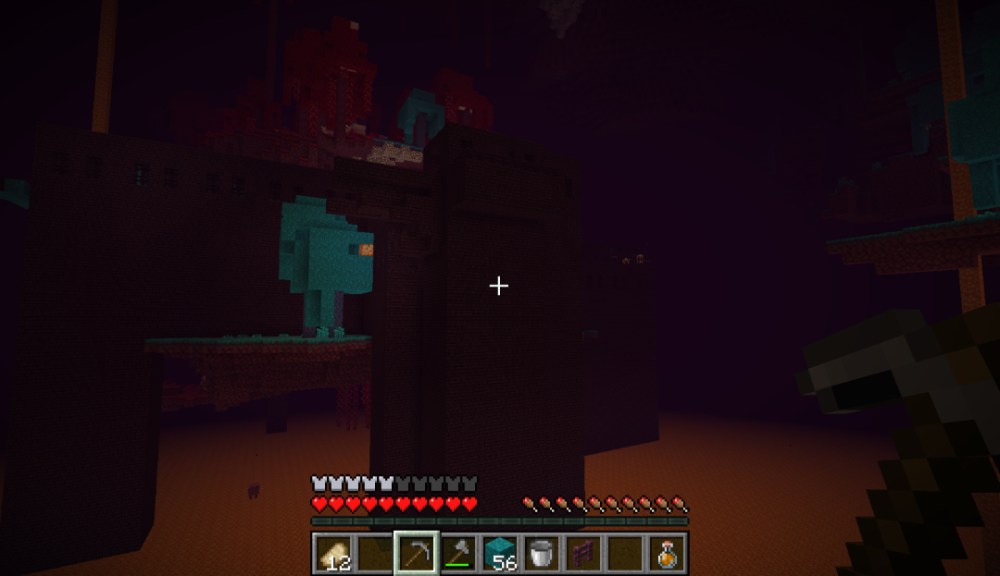
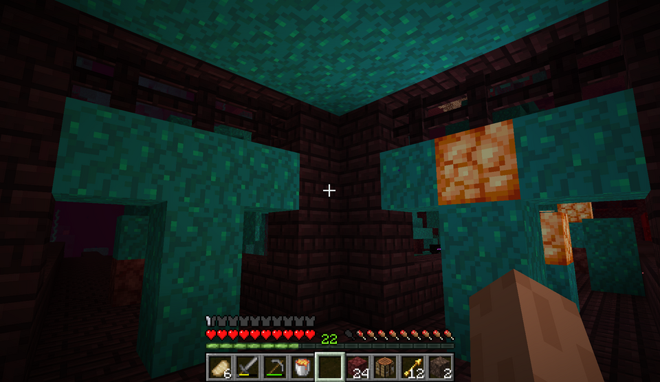
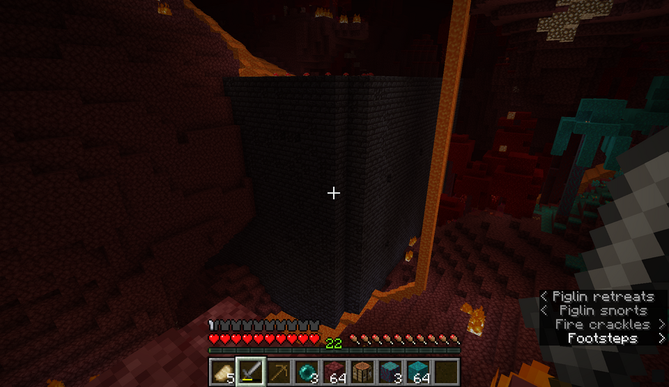
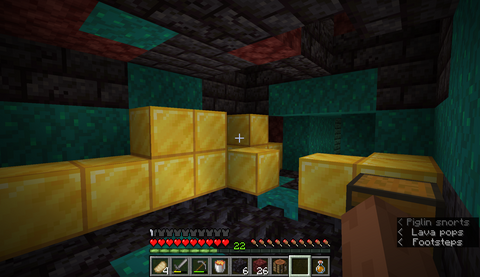

Structures
Nether fortresses and bastion remnants are the two large structures that generate in the Nether. They contain lots of items that can't be acquired in any other way. They can also be very dangerous. Here is some advice for exploring and looting nether fortresses and bastion remnants.
Nether Fortresses


Nether fortresses are made of open air walkways and closed corridors. Wither skeletons and blazes spawn in fortresses, making them very dangerous. In addition, the hallways can often be hard to navigate, leading people to get lost while exploring. Here is the best advice I have on exploring and looting nether fortresses. At every intersection make a T shape out of blocks that stand out against the netherbrick. This serves two purposes. First, wither skeletons are too tall to walk through a gap two blocks tall. Second, you can hide behind the pillar in the middle to avoid blazes and skeletons. It also makes navigation easier; you know you have been somewhere before because there are Ts at the intersection. To keep from getting lost, put a different block on the side of the intersection that leads home. I like to use shroomlights.
Bastion Remnants


To explore bastion remnants you need a couple resources. First, you need gold armor. Piglins only attack you if you aren't wearing gold armor, so making some will help you avoid a lot of trouble. Second, you need a lava bucket. The exception to the gold armor rule is the piglin brute. Brutes don't care about the armor and will attack on sight. They deal lots of damage and have lots of health. Attacking brutes angers the other piglins, so that is a dangerous option. To deal with them, stand where they can't reach you and pour lava on them. This will kill the brute quickly and doesn't anger the other piglins.
When you get to the loot, be careful. Opening chests and mining gold in their presence will anger the piglins. To avoid this, close yourself off from the piglins so they don't see you doing the provoking action.